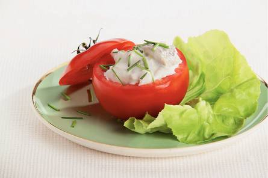

Gevulde tomaat
Ingredienten
- 1 ui
- 1 pot haring in milde roomsaus (310g)
- 4 blaadjes kropsla
- 1/2 zakje verse bieslook (a 25g)
Bereidingswijze
- Ui pellen en snipperen.
- In kom ui door de haring scheppen. Met zout en peper op smaak brengen.
- Tomaten wassen, kapjes eraf snijden en zaadjes verwijderen. Bieslook fijnknippen.
- Tomaten met haringmengsel vullen en met bieslook garneren. Kropsla over vier borden verdelen en tomaatjes erop zetten.
